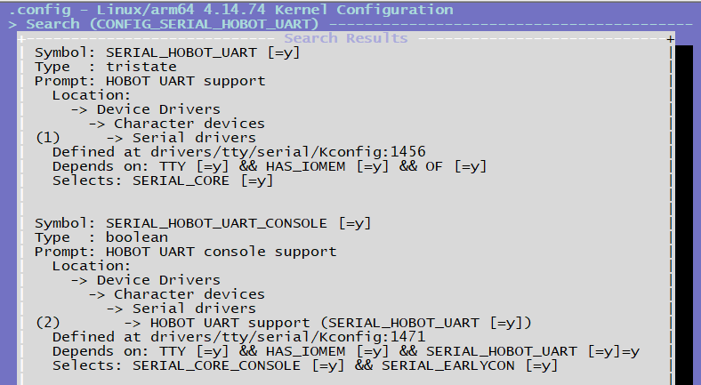
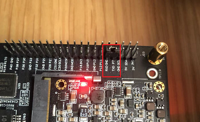

4.3.3. UART驱动调试指南
X3 芯片共有4路串口：UART0、UART1，UART2，UART3
UART0 用作调试串口，只有 UART1 支持硬件自动流控
支持比特率 115.2Kbps，230.4Kbps，460.8Kbps，921.6Kbps，1.5Mbps，2Mbps，4Mbps。2M以上速录需要使能TOI
支持基于中断或基于 DMA 的模式
4.3.3.1. 驱动代码
代码路径
drivers/tty/serial/hobot_serial.c
drivers/tty/serial/hobot_serial.h
内核配置
CONFIG_SERIAL_HOBOT_UART
SERIAL_HOBOT_UART_CONSOLE

DTS设备节点配置
在 hobot-xj3.dtsi 文件中有uart0-3的通用配置，此文件内配置一般不做修改，当需要使能对应的串口时，可以到具体的板子配置设备树中修改、添加自定义配置，例如在 hobot-x3-sdb.dts 文件内使能 uart0、1、3
/* arch/arm64/boot/dts/hobot/hobot-xj3.dtsi */
uart0: serial@0xA5000000 {
compatible = "hobot,hobot-uart";
reg = <0 0xA5000000 0 0x1000>;
interrupt-parent = <&gic>;
interrupts = <0 29 4>;
clocks = <&uart0_mclk>;
pinctrl-names = "default";
pinctrl-0 = <&uart0_func>;
status = "disabled";
};
/* arch/arm64/boot/dts/hobot/hobot-x3-sdb.dts */
&uart0 {
status = "okay";
};
&uart1 {
status = "okay"; /* 4 wire uart for bt */
pinctrl-0 = <&uart1_func_rtscts>; /* <&uart1_func>; uart 1 connect to bt with rtscts*/
};
&uart3 {
status = "okay"; /* 4 wire uart for bt */
};
4.3.3.2. UART测试
硬件上把uart3的TX和RX进行连接。

编译uart_duplex.c 代码，具体代码如附录A
/opt/gcc-ubuntu-9.3.0-2020.03-x86_64-aarch64-linux-gnu/bin/aarch64-linux-gnu-gcc -o uart_duplex uart_duplex.c -lpthread
回环测试命令：打开/dev/ttyS3，默认波特率4Mbps，默认每轮测试1MB数据，测试100轮，读写同时进行，每发、收512字节做一轮数据校验，完整一轮测试结束后，如果没有出错则打印校验正确。
# ./uart_duplex -c 100 -d /dev/ttyS3
test size:1024 Kbytes, baud:4000000
Start receive thread
Start send thread
Start recv_check thread
This is receive test 1 times
This is uart send 1 times
receive sum:102416 bytes
receive sum:205312 bytes
...
receive sum:924164 bytes
receive sum:1027076 bytes
send 1024Kbytes,time:2700.000000ms, BPS:379259.250000
This is receive test 2 times
### Check the received data is correct ###
uart_duplex命令是测试uart的，可以阅读它的帮助信息获取更多使用方法。
4.3.3.3. 附录
4.3.3.4. A 测试代码
#include <stdio.h>
#include <stdint.h>
#include <stdlib.h>
#include <unistd.h>
#include <fcntl.h>
#include <termios.h>
#include <errno.h>
#include <string.h>
#include <getopt.h>
#include <sys/time.h>
#include <pthread.h>
#include <semaphore.h>
#include <stdlib.h>
#define BUFF_SIZE (20 * 1024 * 1024)
pthread_t recv_thread_id;
pthread_t recv_check_thread_id;
pthread_t send_thread_id;
char send_buffer[BUFF_SIZE] = {0};
char recv_buffer[BUFF_SIZE] = {0};
static uint32_t test_size = 1024;
static uint32_t baud = 4000000;
static uint32_t test_count = 0;
int g_fd;
uint64_t recv_total = 0;
sem_t sem_check;
#define FRAME_LEN 512
#if 1
static void dump_recv_data(uint32_t sum, uint32_t len)
{
int ii = 0;
printf("dump receive data:\n");
for (ii = 0; ii < len; ii += 4) {
printf("0x%x: 0x%x, 0x%x, 0x%x, 0x%x\n", sum + ii,
recv_buffer[sum + ii],
recv_buffer[sum + ii + 1],
recv_buffer[sum + ii + 2],
recv_buffer[sum + ii + 3]);
}
}
static void dump_send_data(uint32_t sum, uint32_t len)
{
int ii = 0;
printf("dump send data:\n");
for (ii = 0; ii < len; ii += 4) {
printf("0x%x: 0x%x, 0x%x, 0x%x, 0x%x\n", sum + ii,
send_buffer[sum + ii],
send_buffer[sum + ii + 1],
send_buffer[sum + ii + 2],
send_buffer[sum + ii + 3]);
}
}
#endif
static void set_baudrate(int fd, int nSpeed)
{
struct termios newtio;
tcgetattr(fd, &newtio);
switch (nSpeed) {
case 2400:
cfsetispeed(&newtio, B2400);
cfsetospeed(&newtio, B2400);
break;
case 4800:
cfsetispeed(&newtio, B4800);
cfsetospeed(&newtio, B4800);
break;
case 9600:
cfsetispeed(&newtio, B9600);
cfsetospeed(&newtio, B9600);
break;
case 19200:
cfsetispeed(&newtio, B19200);
cfsetospeed(&newtio, B19200);
break;
case 38400:
cfsetispeed(&newtio, B38400);
cfsetospeed(&newtio, B38400);
break;
case 57600:
cfsetispeed(&newtio, B57600);
cfsetospeed(&newtio, B57600);
break;
case 115200:
cfsetispeed(&newtio, B115200);
cfsetospeed(&newtio, B115200);
break;
case 230400:
cfsetispeed(&newtio, B230400);
cfsetospeed(&newtio, B230400);
break;
case 921600:
cfsetispeed(&newtio, B921600);
cfsetospeed(&newtio, B921600);
break;
case 1000000:
cfsetispeed(&newtio, B1000000);
cfsetospeed(&newtio, B1000000);
break;
case 1152000:
cfsetispeed(&newtio, B1152000);
cfsetospeed(&newtio, B1152000);
break;
case 1500000:
cfsetispeed(&newtio, B1500000);
cfsetospeed(&newtio, B1500000);
break;
case 2000000:
cfsetispeed(&newtio, B2000000);
cfsetospeed(&newtio, B2000000);
break;
case 2500000:
cfsetispeed(&newtio, B2500000);
cfsetospeed(&newtio, B2500000);
break;
case 3000000:
cfsetispeed(&newtio, B3000000);
cfsetospeed(&newtio, B3000000);
break;
case 3500000:
cfsetispeed(&newtio, B3500000);
cfsetospeed(&newtio, B3500000);
break;
case 4000000:
cfsetispeed(&newtio, B4000000);
cfsetospeed(&newtio, B4000000);
break;
default:
printf("\tSorry, Unsupported baud rate, use previous baudrate!\n\n");
break;
}
tcsetattr(fd,TCSANOW,&newtio);
}
static void set_termios(int fd)
{
struct termios term;
tcgetattr(fd, &term);
term.c_cflag &= ~(CSIZE | CSTOPB | PARENB | INPCK);
term.c_cflag |= (CS8 | CLOCAL | CREAD);
term.c_lflag &= ~(ICANON | ECHO | ECHOE | ISIG);
term.c_oflag &= ~(OPOST | ONLCR | OCRNL);
term.c_iflag &= ~(ICRNL |INLCR | IXON | IXOFF | IXANY);
term.c_cc[VTIME] = 0;
term.c_cc[VMIN] = 1;
tcsetattr(fd, TCSAFLUSH, &term);
}
static void *send_test(void *times)
{
/*send thread*/
struct timeval start, end;
int32_t i = 0;
uint32_t j = 0;
uint32_t tmp = 0;
uint32_t exe_count = 0;
int32_t ret = 0;
float ts = 0;
printf("Start send thread\n");
sleep(1);
if (test_count == 0) {
tmp = 10;
} else
tmp = test_count;
for (j = 0; j < tmp; j++) {
if (test_count == 0)
j = 0;
sleep(1);
printf("This is uart send %d times\n", ++exe_count);
gettimeofday(&start, NULL);
for (i = 0; i < test_size * 1024; i = i + FRAME_LEN) {
ret = write(g_fd, &send_buffer[i], FRAME_LEN);
if (ret < FRAME_LEN) {
printf("write ttyS2 error\n");
return NULL;
}
}
#if 1
gettimeofday(&end, NULL);
// printf("start %ld sec, %ld usec, end %ld sec, %ld usec\n", start.tv_sec, start.tv_usec, end.tv_sec, end.tv_usec);
ts = ((end.tv_sec * 1000000 + end.tv_usec) - (start.tv_sec * 1000000 + start.tv_usec)) / 1000;
printf("send %dKbytes,time:%fms, BPS:%f\n", test_size, ts, test_size * 1000 / (ts / 1000));
#endif
}
close(g_fd);
return NULL;
}
static void *recv_test(void *times)
{
int32_t j = 0;
uint32_t exe_count = 0;
int tmp = 0;
int size = 0;
int sum = 0;
int last_count = 0;
int len = 0;
int len_frame = 0; /*use to get correct frame len*/
printf("Start receive thread\n");
memset(recv_buffer, 0, sizeof(recv_buffer));
if (test_count == 0) {
tmp = 10;
} else
tmp = test_count;
for (j = 0; j < tmp; j++) {
sum = 0;
last_count = 0;
if (test_count == 0)
j = 0;
printf("This is receive test %d times\n", ++exe_count);
//gettimeofday(&start, NULL);
size = test_size * 1024;
while (size > 0) {
len = read(g_fd, &recv_buffer[sum], FRAME_LEN);
if (len < 0) {
printf("read error\n");
return NULL;
}
recv_total += len;
len_frame += len;
if (len_frame >= FRAME_LEN) {
len_frame -= FRAME_LEN;
sem_post(&sem_check);
}
#if 0
ret = memcmp(&recv_buffer[sum], &send_buffer[sum], len);
if (ret != 0) {
printf("data compare error\n");
return NULL;
}
#endif
sum +=len;
size -= len;
if ((sum - last_count) > 100 * 1024) {
printf("receive sum:%d bytes\n", sum);
last_count = sum;
}
}
#if 0
gettimeofday(&end, NULL);
printf("start %ld sec, %ld usec, end %ld sec, %ld usec\n", start.tv_sec, start.tv_usec, end.tv_sec, end.tv_usec);
ts = ((end.tv_sec * 1000000 + end.tv_usec) - (start.tv_sec * 1000000 + start.tv_usec)) / 1000;
printf("receive %dKbytes,time:%fms, BPS:%f\n", test_size, ts, test_size * 1000 / (ts / 1000));
#endif
}
close(g_fd);
return NULL;
}
int32_t error_bit(uint64_t *data1, uint64_t *data2, int32_t len)
{
uint64_t c=0;
int32_t sum = 0;
int i = 0;
for(i = 0; i < len / 8; i++) {
c = data1[i] ^ data2[i];
while(c!=0) {
c &= (c - 1);
sum++;
}
}
return sum;
}
static void *recv_check_test(void *times)
{
int32_t check_pos = 0;
uint32_t *cur_frame = NULL;
int32_t error_bit_cnt = 0;
printf("Start recv_check thread\n");
while (1) {
sem_wait(&sem_check);
/*check data*/
cur_frame = (uint32_t *)&recv_buffer[check_pos];
if (*cur_frame != check_pos / FRAME_LEN) {
printf("error: may lost frame, curruent frame is %d, expected frame is %d position: 0x%x\n",
*cur_frame, check_pos / FRAME_LEN, check_pos);
//dump_recv_data(check_pos, FRAME_LEN);
//dump_send_data(check_pos, FRAME_LEN);
error_bit_cnt = 0;
error_bit_cnt = error_bit((uint64_t *)&recv_buffer[check_pos],
(uint64_t *)&send_buffer[check_pos],
FRAME_LEN / 8);
check_pos += FRAME_LEN;
printf("test total data: 0x%lx, error bit count:%d\n", recv_total, error_bit_cnt);
if (check_pos == test_size * 1024) {
//exit(1);
printf("uart: frame head error\n");
}
continue;
}
error_bit_cnt = 0;
error_bit_cnt = error_bit((uint64_t *)&recv_buffer[check_pos],
(uint64_t *)&send_buffer[check_pos],
FRAME_LEN / 8);
if (error_bit_cnt) {
printf("test total data: 0x%lx!!!!!!!, error bit count:%d\n", recv_total, error_bit_cnt);
//dump_recv_data(check_pos, FRAME_LEN);
//dump_send_data(check_pos, FRAME_LEN);
check_pos += FRAME_LEN;
if (check_pos == test_size * 1024) {
//exit(1);
printf("uart: frame data error\n");
}
continue;
}
memset(&recv_buffer[check_pos], 0, FRAME_LEN);
check_pos += FRAME_LEN;
if (check_pos == test_size * 1024) {
check_pos = 0;
printf("### Check the received data is correct ###\n");
}
}
return NULL;
}
static const char short_options[] = "s:u:c:b:d:h";
static const struct option long_options[] = {
{"size", required_argument, NULL, 's'},
{"baudrate", required_argument, NULL, 'b'},
{"count", required_argument, NULL, 'c'},
{"device", required_argument, NULL, 'd'},
{"help", no_argument, NULL, 'h'},
{0, 0, 0, 0}};
int main(int argc, char *argv[])
{
int ret = 0;
char *pDevice = NULL;
int i = 0;
int32_t cmd_parser_ret = 0;
uint32_t *frame_num = NULL;
uint32_t *frame_value = NULL;
while ((cmd_parser_ret = getopt_long(argc, argv, short_options, long_options, NULL)) != -1) {
switch (cmd_parser_ret) {
case 's':
test_size = atoi(optarg);
break;
case 'b':
baud = atoi(optarg);
break;
case 'c':
test_count = atoi(optarg);
break;
case 'd':
pDevice = optarg;
break;
case 'h':
printf("**********UART STRESS TEST HELP INFORMATION*********\n");
printf(">>> -s/--size [test size,unit--Kbytes,default is 1M, MAX is 20M]\n");
printf(">>> -b/--baudrate [baud,default is 4M]\n");
printf(">>> -c/--count [test count,default is forever]\n");
printf(">>> -d/--uart [uart device, user must set this]\n");
return 0;
}
}
if (baud > 4000000) {
printf("baud is larger than max baud\n");
return -1;
}
g_fd = open(pDevice, O_RDWR | O_NOCTTY);
if (0 > g_fd) {
printf("open fail\n");
return -1;
}
set_baudrate(g_fd, baud);
set_termios(g_fd);
printf("test size:%d Kbytes, baud:%d\n", test_size, baud);
for (i = 0; i < test_size * 1024; i+=4) {
if (i % FRAME_LEN) {
frame_value = (uint32_t *)&send_buffer[i];
*frame_value = rand();
}
}
for (i = 0; i < test_size * 1024 / FRAME_LEN; i++) {
frame_num = (uint32_t *)&send_buffer[i * FRAME_LEN];
*frame_num = i;
// printf("pos:0x%x, value:0x%x\n", i * FRAME_LEN, *frame_num);
}
sem_init(&sem_check, 0, 0);
ret = pthread_create(&recv_thread_id,
NULL,
recv_test,
NULL);
if (ret < 0) {
printf("create uart1 test thread failed\n");
return -1;
}
ret = pthread_create(&send_thread_id,
NULL,
send_test,
NULL);
if (ret < 0) {
printf("create uart2 test thread failed\n");
return -1;
}
ret = pthread_create(&recv_check_thread_id,
NULL,
recv_check_test,
NULL);
if (ret < 0) {
printf("create receive check thread failed\n");
return -1;
}
pthread_join(recv_thread_id, NULL);
pthread_join(recv_check_thread_id, NULL);
pthread_join(send_thread_id, NULL);
return 0;
}